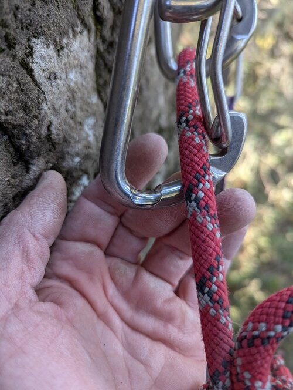
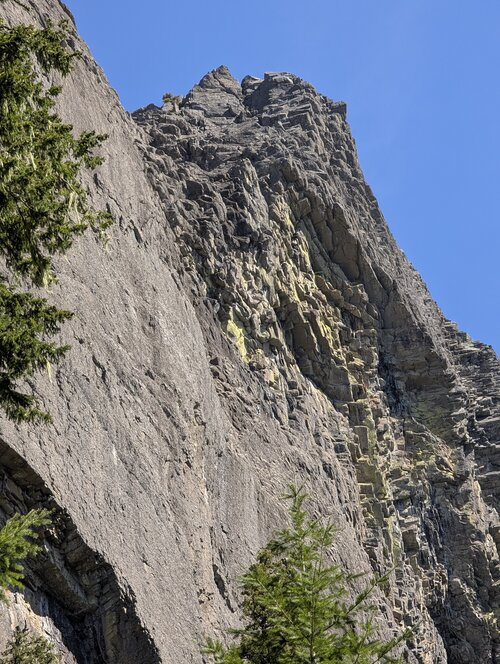
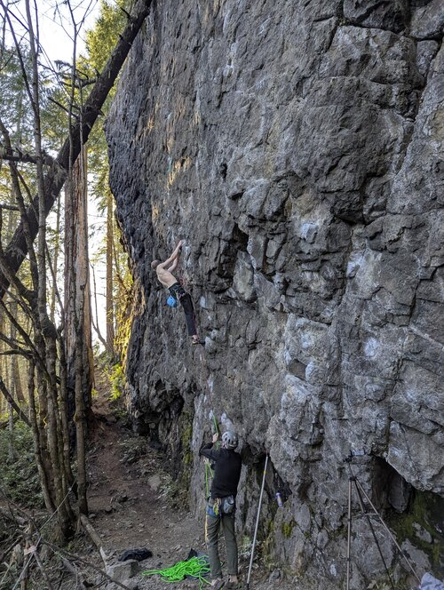
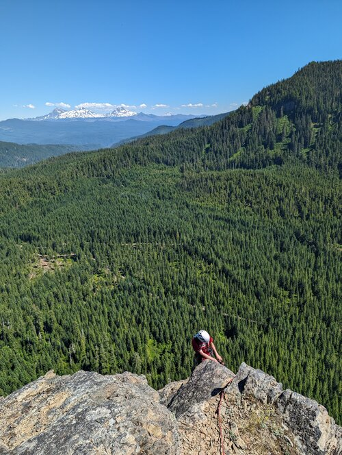
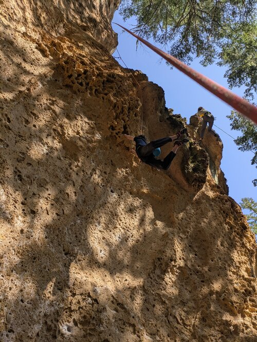
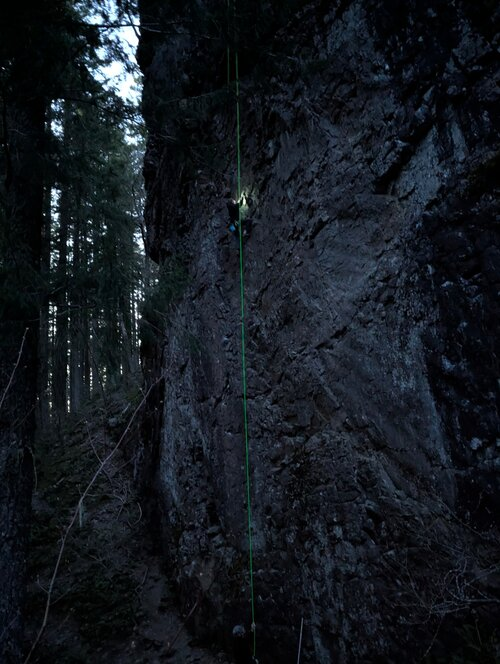

Climbing Tips & Personal Experiances
Here you can learn some useful tips and hear some great climbing stories to get hyped for your next adventure.
Climbing Tips

Anchor Safety
Always be aware of safety hardware on the wall! Old hardware can become so worn that the steel becomes dangerously thin. In this case, attach another draw and anchor to the new one.

Extra Parties
Can you spot the people in this picture? Always be aware of other parties on the wall. They can kick down loose rock and it’s your responsibility to be aware of surroundings.

Stick Clip
The first piece of protection on this route is about 10 feet off the ground. A fall before that means you will hit the ground, so use a stick clip to be protected the moment you step off the ground.
Experiances

Wolf Rock
Summiting Wolf Rock is Oregon’s largest technical big wall route! You get over 1000 feet of vertical and technical climbing on old school hardware. Pitches 7-9 are especially fun and give great photo opportunities. The downclimb sure is adventurous! Traversing down a loose scree field managed to be harder than the vertical climbing in some spots.

Hairbender Crux
This massive cutloose move is the crux of Hairbender at Lookout Point. The route goes at 5.12b but feels much harder…. Jumping off of super delicate feet and a terrible hand onto the massive hueco is such a satisfying and photogenic move that makes the trip worth it!

Night Climbing
This was the end to an excellent day of climbing at Eagles Rest. The group wanted to climb one more route on the Dream Wall and we’d done it before so we figured climbing in the dark with headlamps would be easy. About ¾ of the way up the route, the lighting was completely gone and we had to make some tricky and committing moves to blindly top out and retrieve our anchor setup. This was quite the adventure, but I would not recommend others try it as well.